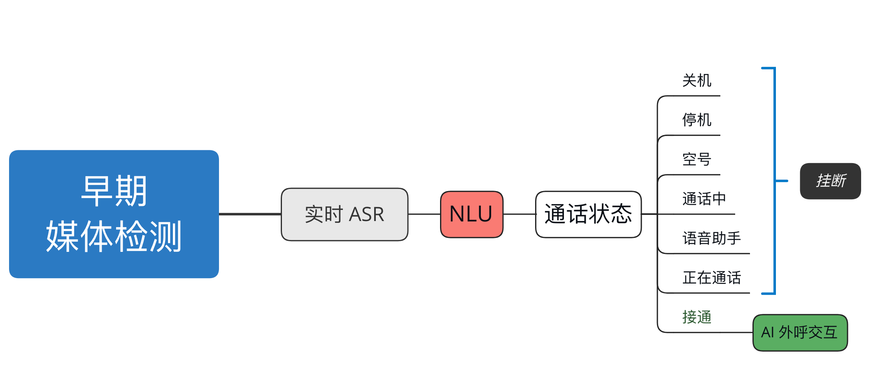

早期媒体检测
1. 背景
在语音呼叫场景中，经常会遇到拨通电话后听到是“空号”、“停机”、“关机”、“通话中” 等语音播报，这在人工呼叫的场景中还可以及时手动挂断，并不会造成太大的损失。但在 AI 外呼机器人场景中，机器人如果无法正确且高效得提前识别到通话状态，那就必须无效等待 60 秒（运营商端限制）。这显然是一个非常值得优化的问题，如果我们能将 60 秒的播报优化到 10 秒，成本和效率都能有 80%+ 的优化。
早期媒体检测便是解决此类问题一种技术手段，通过音频检测、NLU 意图识别等，提前识别到号码的无效状态，及时切断呼叫流程，节省相应的资源出来。
2. 技术架构

无声状态
通话过程中，存在电话接通后但无实际语音内容输出，所以我们送入 ASR 引擎的数据流应该为接通状态前的数据。
3. 文本转写
首先我们对收集到的录音进行文本转写，后续搭建一个文本相似度或者意图识别的 NLP 模型，实时转写的过程中识别当前呼叫是否是无效的状态。
| import os
import librosa
import pandas as pd
from funasr import AutoModel
audios = [
f"{fdir}/{fpath}"
for fdir, _, fpaths in list(os.walk("data"))[1:]
for fpath in fpaths
if fpath.endswith(".mp3") or fpath.endswith(".wav")
]
model = AutoModel(
model="paraformer-zh",
vad_model="fsmn-vad",
vad_kwargs={"max_single_segment_time": 60000},
punc_model="ct-punc",
# spk_model="cam++"
)
results = []
for audio in audios:
audio_data, sr = librosa.load(audio, sr=None)
dur = librosa.get_duration(y=audio_data, sr=sr)
result = model.generate(
input=audio,
batch_size_s=300,
batch_size_threshold_s=60,
)
if len(result) > 0:
results.append([audio, dur, result[0]["text"]])
print(audio, dur)
df = pd.DataFrame(results, columns=["audio", "duration", "text"])
df.to_csv("results/20240730.csv", index=False, encoding="utf8")
|
4. 语料标注
这里我们对转写好的文本进行标注，以收集用于后续模型的训练数据（推荐使用 BERT 模型进行微调，这里考虑到并发以及资源使用问题，我们使用朴素贝叶斯算法作为多分类器）。
标注工具
如果数据量较大，推荐使用 LabelStudio 这样的工具进行文本标注。
通话状态分类
- 关机
- 停机：停机 / 暂停服务（手机欠费 / 手机无信号）
- 空号
- 通话中: 通话中 / 用户正忙（拦截 / 黑名单 / 被挂断）
- 无法接通: 无信号、无服务 / 关机 / 拉黑